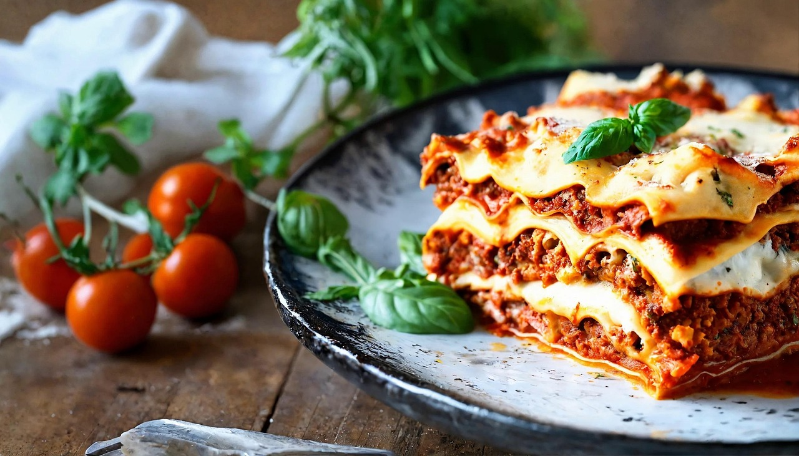
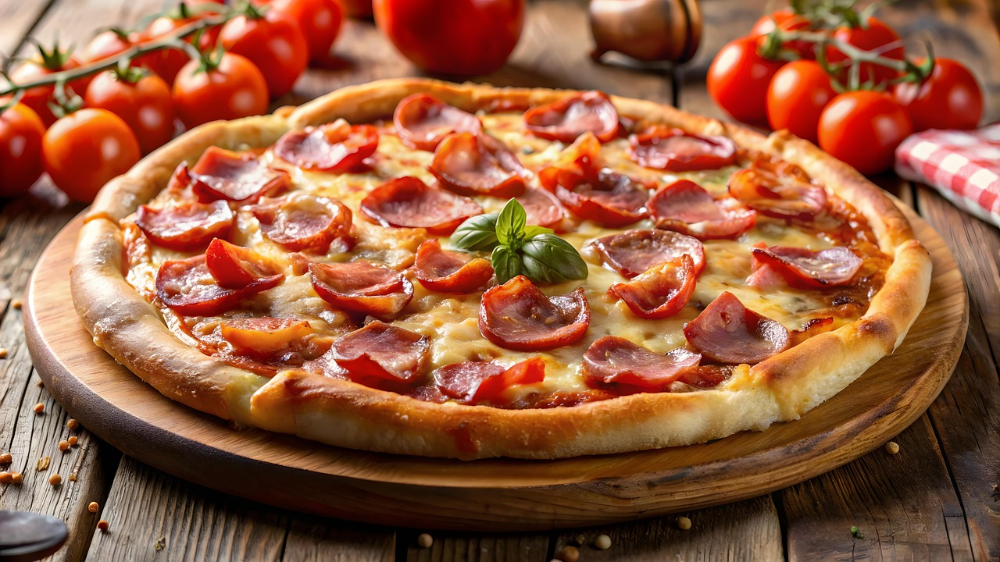
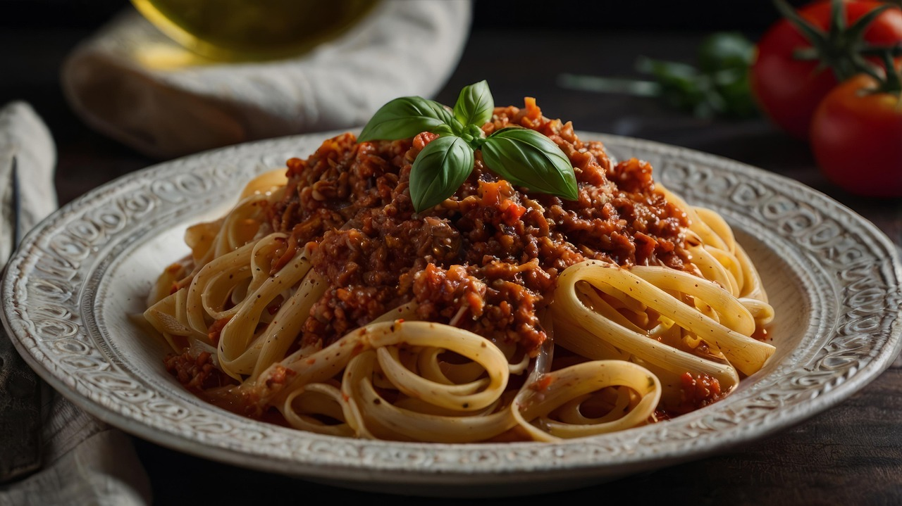

Pratos Típicos da Culinária Italiana
A culinária italiana é famosa por sua diversidade e sabores marcantes, com pratos que variam de região para região. Entre os mais icônicos estão a pizza, com sua massa fina e coberturas variadas, e a pasta, que pode ser encontrada em diversas formas e acompanhada de molhos como o pesto, carbonara ou ragù. Os risotos também são destaque, especialmente o de cogumelos e frutos do mar, enquanto o tiramisù é uma sobremesa clássica que encanta com sua combinação de café, queijo mascarpone e cacau. Cada prato reflete a rica tradição e paixão que os italianos dedicam à gastronomia.
Lasanha

Pizza

Macarronada
